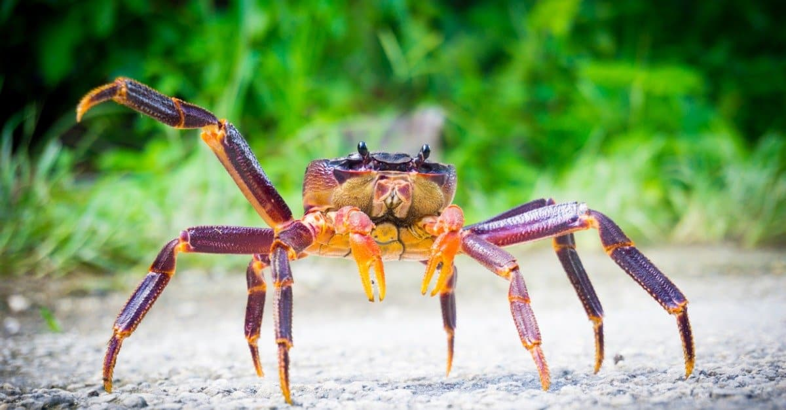

The coconut crab is a scary animal that sometimes eats each other.
©iStock.com/BrianScantlebury
As if a bird-eating spider wasn't scary enough, meet the crab capable of doing the same. They've been known to feast on rats, domesticated chickens, and even kittens. These scary animals have also been known to cannibalize one another with little hesitation. These are the largest land crabs on Earth with a width of three feet and a length of a foot and a half — and their overgrown claws are known to be capable of exerting pressure that can rival the bite force of bears and cheetahs. They often use these claws to tear at the flesh of any prey they can find, but this crab's exceptional exertion is primarily used to crack open coconuts in their Pacific island habitats. Their well-documented habits for being voracious eaters have even led to a compelling theory: that they were responsible for the disappearance of Amelia Earhart's body and that they might have even devoured her while alive.